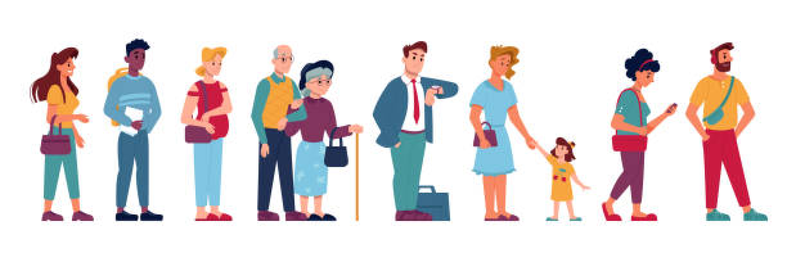
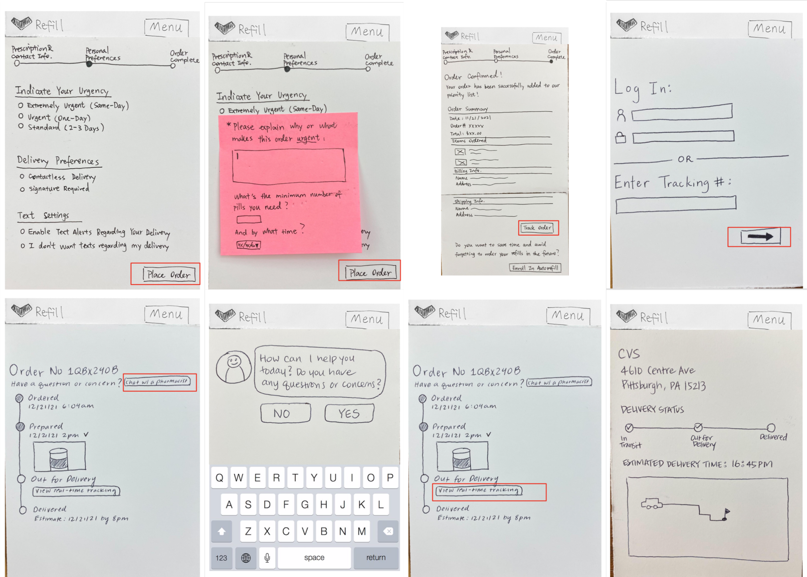

← go back home
Creating a website to make prescription refills easier and more accessible.
↓This website was a project as part of Interaction Design Studio 1 at Carnegie Mellon University. My team was composed of four Bachelors and Masters of Human-Computer Interaction students. MedFill is a responsive web design that improves the current process of ordering refills from pharmacies.
The current process of ordering prescription refills at pharmacies is often inconvenient. Customers need to call the pharmacy to order refills, navigate poorly-designed pharmacy websites, and deal with the troubles of receiving orders. Additionally, based on user research, many users are dissatisfied about the pickup process, such as long lines for pick up orders at the counter and drive-through windows. On the delivery side, there are concerns about “prescription delivery,” such as missing orders, stolen packages, and the lack of transparent communication.
After deciding to focus on the domain of ordering deliveries from a local pharmacy, our team conducted 4 user interviews using the method of directed storytelling. Through our initial research, we aimed to understand the process of how people currently place online orders on prescribed medications from a local pharmacy, including their goals, needs, and motivations.
We also decided to conduct secondary research online in order to better understand drug regulations and services at local pharmacies in Pittsburgh. In order to transition from data collection to insights generation, our team used affinity diagramming and a customer journey map to converge our findings from the rapid user research.
After we refined our customer journey maps, each of our team members went onto produce scenarios and storyboards. The storyboards helped us have a realistic sense of how our solution may be implemented in real life and how it would fit into the current service experience of ordering refills.
We then proceeded to make a paper prototype, designing for mobile first, in preparation for the think-aloud testing. Conducting think-alouds for usability testing with our paper prototypes was very helpful and prevented us from many mistakes.
Creating a responsive web design leads to difficult tradeoffs between a mobile and desktop screen. By examining differences in interaction patterns between various screen sizes, I gained a better understanding of how to make interaction more efficient on different screens.
Ordering refills from pharmacies can have various levels of urgency. My team focused on the urgent refill ordering process and how to streamline current processes. I learned about the importance of using secondary research and conducting interviews to validate assumptions.